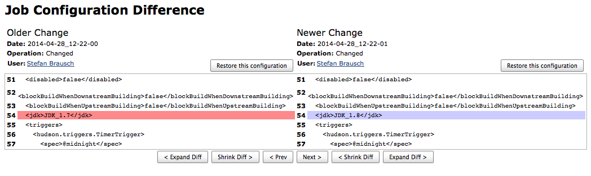
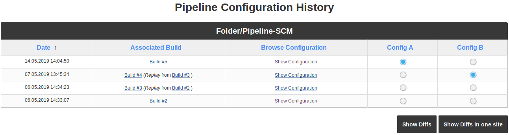
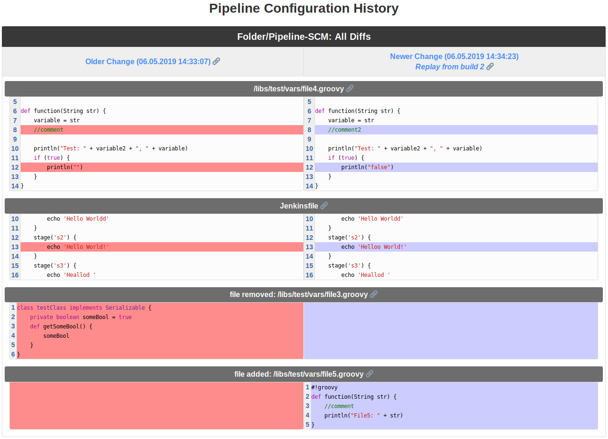
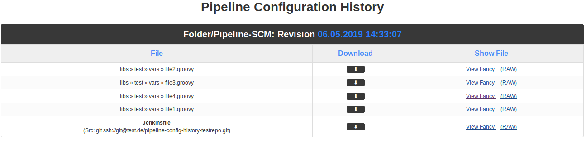

Jenkins 流水线配置历史插件介绍
流水线是在 Jenkins 中创建任务的有效的和现代的方式。 为了快速、简单地识别流水线变更，我们开发了流水线配置历史插件。 这个插件检测流水线的变更，并为用户提供一个选项，以明显地、可追溯地查看流水线配置两次构建（差异）之间的变更。
一切是如何开始的
这一切开始于十年之前 —— 经典的任务类型 (例如：自由风格、Maven 等等)。 每隔一段时间，用户就会联系我们，因为他们的任务无法在一夜之间完成。 为什么这个任务失败了呢？ 这次失败和任务配置变更有关系吗？ 用户典型的回答是：”我们没有改任何东西”，但这是真的吗？ 我们思考了这个问题，并决定开发一个插件来帮助我们解决这个问题。 这就是plugin:jobConfigHistory[任务配置历史]的想法和开始。
现在可以查看任务配置的变更(例如其他分支、JDK版本等)，而且更常见的情况是，破坏构建的原因是任务配置的变更。

多年来，该插件得到了开发，目前仍在开发中。 添加了新的功能，不仅可以查看任务配置，还可以查看全局和代理配置的变更。 还可以恢复旧的配置版本。 如今，这个插件已经有超过30,000次安装量。 多年来，JobConfigHistory 减轻了我们的日常工作 —— 我们有超过3000个 Jenkins 任务！ 然后出现了一种新的任务类型：流水线。
流水线 —— 需要一些新的东西
流水线任务和经典的任务类型有根本地区别。 经典的任务类型是通过 Jenkins GUI 配置的，而流水线任务是配置即代码。 实际上，每个流水线任务都是通过 Jenkins GUI 创建的，然而这并不一定是流水线配置的位置。 流水线可以被配置：
- 直接在 Jenkins 任务中作为脚本。 代码将直接插入任务配置页面。
- 作为源代码管理系统（SCM）中的 Jenkinsfile：流水线配置在 SCM 中的文本文件（Jenkinsfile）中定义。 在任务本身中，只配置了 Jenkinsfile 存储库的路径。 在构建过程中，Jenkinsfile 从 SCM 中被检出并被处理。
- 作为共享库：流水线配置的一部分被移动到单独文件中，它可以由多个任务使用。 这些文件也保存在 SCM 中。 即使这样仍然需要 Jenkinsfile（或者任务中的流水线脚本）。
对于任务配置的每次保存操作，如果发生了变更，JobConfigHistory 将创建实际任务配置的副本。 只有当流水线配置作为脚本插入到任务配置页面时，该方法才适用于流水线任务。 JobConfigHistory 未检测到 Jenkinsfile 或共享库中的变更。 您必须使用 SCM 系统查看 Jenkinsfile 或共享库的变更。 在构建时间和对 Jenkinsfile 或共享库的变更之间找到相关性是复杂且耗时的。
这个新问题不仅仅是 JobConfigHistory。 需要一个新的解决方案来检测流水线变更并显示 Jenkins 中的这些变更。 所以我们开发了流水线配置历史插件。
在每个流水线运行期间，Jenkinsfile 和相关的共享库都保存在任务的构建目录中。
流水线配置历史插件将最近运行和前一次运行之间流水线文件的变更保存为历史事件。
因此，当流水线任务以成功的构建结束时，您可以检查任何使用的流水线文件是否发生了变更。
您还可以看到发生变更的构建。

因为流水线配置可以由可能发生变更的多个文件组成，所以 diff 中只显示两个构建版本之间发生变更的文件。 这使得整个过程更加紧凑和有效：

但有时您可能想要显示的不仅仅是流水线文件之间的差异。 您可能希望查看哪些流水线文件正在使用，或者这些文件在使用时的内容。 因此可以查看所有文件及其内容。 如果需要，您也可以下载：

结论
我们在生产中成功地使用了流水线配置历史插件。 它从第一天起就帮助我们解决了由于流水线配置变更而出现的问题。 流水线配置历史插件不会替换任务配置历史插件。 插件有不同的用例。 很多时候，任务或流水线配置上的小变更也会产生很大的影响。 由于任务或流水线配置的变更与不同的构建行为之间的时间相关性，现在可以大大减少分析构建失败的时间和精力。 任务配置历史和流水线配置历史插件允许我们在咨询和解决问题方面为用户提供帮助。通过访问任务的配置历史，我们可以更快地解决问题。这些插件对我们的日常工作是必不可少的。